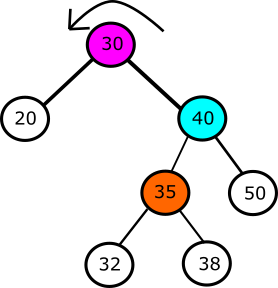
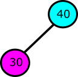
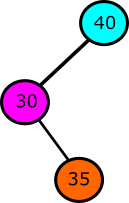
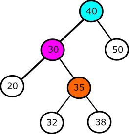
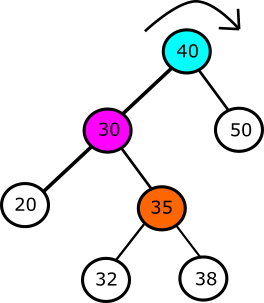
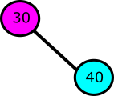
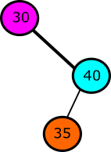
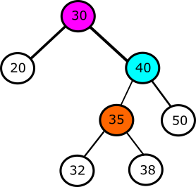
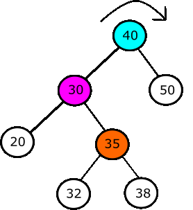

Rotacje
Rotacje są ważnym elementem drzew czerwono-czarnych. Polegają one na zmianie struktury drzewka poprzez
zmianę poddrzew.
Głównym celem rotacji jest zmniejszenie wysokości drzewa, balansujemy wysokością poddrzew - te wyższe
zmniejszamy, niższe wydłużamy.
Co ważne - rotacje nie zmieniają w żaden sposób kolejności elementów (relacja pomiędzy węzłami/sortowanie jest
zachowane).
Spis treści (kliknij, by nie scrollować ;]):
Rotacja w lewo
Załóżmy, że mamy poniższą sytuację

Specjalnie użyliśmy tutaj innego kolorwania (oczywiście, niezgodnego z konwencją RBT), aby same czynności,
które wykonujemy w ramach rotacji były czytelniejsze.
Chcemy dokonać rotacji w lewo na węźle o kluczu "30". Węzeł ten zejdzie do swojego byłego lewego podrzewa.
Dodatkowo "pociągnie" ze sobą swoje prawo podrzewo (które pójdzie do góry - zgodnie z linią drzewa),
zatem teraz węzeł o kluczu "30" będzie lewym dzieckiem węzła o kluczu "40".

No dobrze, ale co się stanie z pozostałymi węzłami?
Zacznijmy od węzła o kluczu "35". Przed operacją rotacji w lewo ten węzeł był lewym dzieckiem węzła o kluczu
"40".
Czy nadal może nim być? Nie, ponieważ ma już swoje lewe dziecko - węzeł o kluczu "30".
Czy może być zatem prawym dzieckiem węzła o kluczu "40"? Nie, ponieważ zaburzylibyśmy regułę drzewa BST.
Pamiętasz tę regułę? klucz lewego dziecka < klucz rodzica < klucz prawego dziecka
To co powinniśmy zrobić? Odpowiedź jest dosyć prosta - dołączmy węzeł o kluczu "35" jako prawe dziecko węzła
o kluczu "30".

Co z pozostałymi węzłami? Dołączamy je bez zmian.

Sprawdź, czy zostały zachowane właściwości BST (tak, BST - do drzewa czerwono-czarnego wrócimy w operacjach
na tym drzewku).
Rotacja w prawo
Rotacja w prawo jest symetrycznym odpowiednikiem rotacji w lewo. Skorzystamy z powyższego przykładu po
rotacji w prawo -
czyli po operacji rotacji w prawo wrócimy do punktu wyjściowego.

Chcemy dokonać rotacji w lewo na węźle o kluczu "40". Węzeł ten zejdzie do swojego byłego prawego podrzewa.
Dodatkowo "pociągnie" ze sobą swoje lewe podrzewo (które pójdzie do góry - zgodnie z linią drzewa),
zatem teraz węzeł o kluczu "40" będzie prawym dzieckiem węzła o kluczu "30".

Jak już się pewnie domyślasz, węzeł o kluczu "35" będzie lewym dzieckiem węzła o kluczu "40".

A resztę węzłów podpinamy bez zmian.

Tak samo - sprawdź, czy zostały zachowane właściwości BST.

Podsumowanie
Widzisz podobieństwa? Jakieś analogie? Podpowiemy Ci:
- Kiedy rotujesz węzeł w lewo, jego lewego wnuka podpinasz z prawej strony
- Kiedy rotujesz węzeł w prawo, jego prawego wnuka podpinasz z lewej strony
W obu przykładach wnukiem był węzeł o kluczu "35".
Boli Cię głowa od tych rotacji? Zrób sobie kawę, kilka przysiadów, weź 10 głębokich wdechów i lećmy dalej! Insertions - we're coming!
Powrót do góry